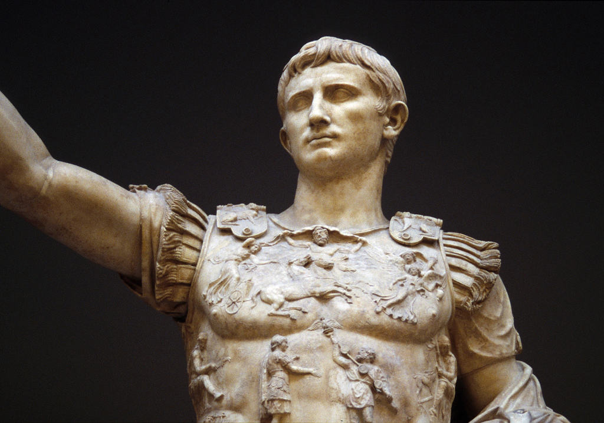

Augustus Caesar (27 BCE - 14 CE) was the name of the first and, by most accounts, greatest Roman emperor. Augustus was born Gaius Octavius Thurinus on 23 September 63 BCE. Octavian was adopted by his great-uncle Julius Caesar in 44 BCE, and then took the name Gaius Julius Caesar. In 27 BCE the Senate awarded him the honorific Augustus ("the illustrious one"), and he was then known as Gaius Julius Caesar Augustus.
Owing to the many names the man went by in his life, it is common to call him Octavius when referring to events between 63 and 44 BCE, Octavian when referring to events between 44 and 27 BCE, and Augustus regarding events from 27 BCE to his death in 14 CE. It should be noted, however, that Octavian himself, between the years 44 and 27 BCE, never went by that name, choosing instead to align himself closely with his great uncle by carrying the same name; a decision which prompted Mark Antony's famous accusation, as recorded by Cicero: "You, boy, owe everything to your name".
After Julius Caesar's assassination in March of 44 BCE, Octavian allied himself with Caesar's close friend and relative, Mark Antony. Together with another supporter of Caesar, Marcus Aemilius Lepidus, Antony and Octavian formed the Second Triumvirate in October of 43 BCE. Their first order of business seems to have been the systematic killing of any political rivals and supporters of Caesar's assassins. Exactly which of the three was most responsible for the killings is disputed by ancient and modern writers alike with some claiming Octavian innocent and others ascribing to him the most bloodshed. Having cleansed Rome of the 'bad blood' of their opposition, the Second Triumvirate then turned their attention to Caesar's assassins. At the Battle of Phillipi in October 42 BCE, the forces of Brutus and Cassius were defeated by those of the Second Triumvirate forcing both assassins to kill themselves.

Octavian born Gaius Octavius Thurinus at Rome.
Octavian / Augustus adopted posthumously by Julius Caesar.
Second Triumvirate: Antony, Octavian, and Lepidus (official approval by the Roman Senate). Mass proscriptions including Cicero.
Octavian and Antony defeat Republicans under Brutus and Cassius at the Battle of Philippi (Greece).
Octavian amasses a naval fleet to defeat Sextus Pompey.
Octavian strips Lepidus of all power but Pontifex Maximus (supreme priest). Lepidus dies of old age in 12 BC.
Octavian uses Corcyra as a Roman naval base.
The Battle of Actium. Octavian defeats Mark Antony and Cleopatra VII.
Octavian celebrates a triple triumph in Rome.
Octavian is given extraordinary powers and the name Augustus by the Roman Senate.
Reign of Augustus Caesar. Athens and the Agora restored.
Augustus creates the Praetorian Guard.
Augustus takes over most of the powers of the tribuni plebis.
Augustus is given supreme powers by the Roman Senate.
Arch of Augustus built in Rome to commemorate victory over the Parthians.
Statue of Augustus as Pontifex Maximus sculpted.
Augustus rebuilds the Temple of Castor and Pollux in Rome's Forum Romanum.
A massive altar the Ara Pacis is completed by Augustus in Rome.
Augustus is declared "Father of the Country".
Augusutus inaugurates the Temple of Mars Ultor in Rome to commemorate his victory at the Battle of Philippi in 42 BCE.
Augustus appoints two Prefects (praefectus praetorio) to command the Praetorian Guard.
Augustus creates the aerarium militare, a treasury drawn from taxes in order to fund a professional Roman army.
Augustus creates Rome's permanent firefighting force, the Vigiles.
Augustus creates the cohortes urbanae in Rome to help maintain public order.
Augustus dies at Nola of natural causes.